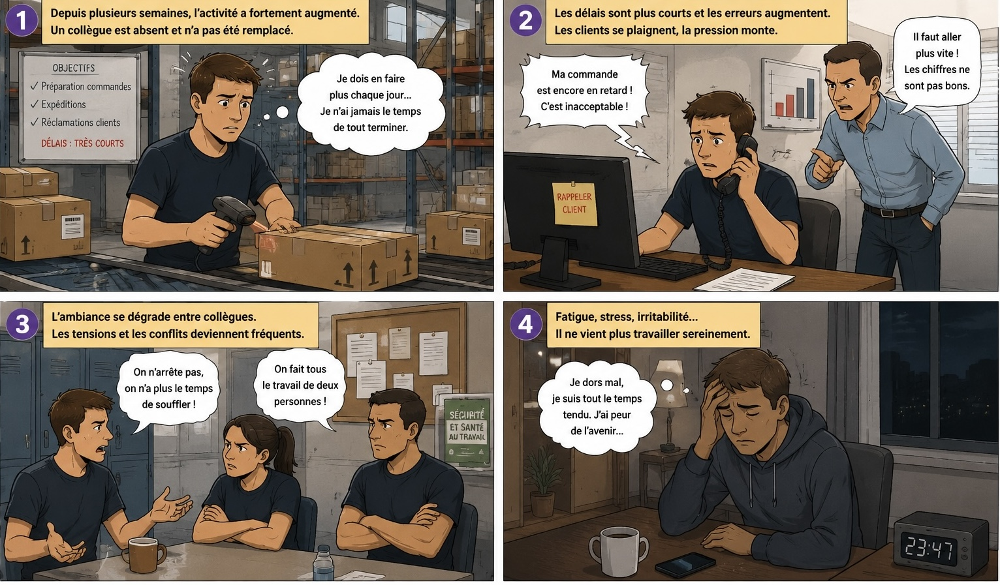
| Qui ? | |
| Quoi ? | |
| Où ? | |
| Quand ? | |
| Comment ? | |
| Pourquoi ? |
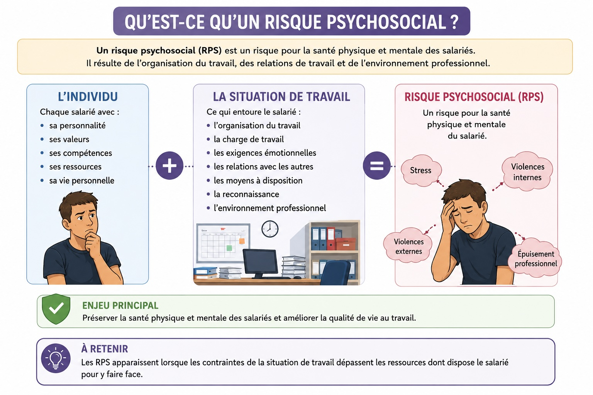
Un risque psychosocial (RPS) est un risque pour la santé physique et mentale des salariés. Il résulte de la rencontre entre :
— l'individu (sa personnalité, ses ressources, sa vie personnelle) ;
— la situation de travail (organisation, charge, exigences, relations, environnement) ;
— les conséquences possibles (stress, violences internes, violences externes, épuisement professionnel).
Les RPS apparaissent lorsque les contraintes de la situation de travail dépassent les ressources dont dispose le salarié pour y faire face.
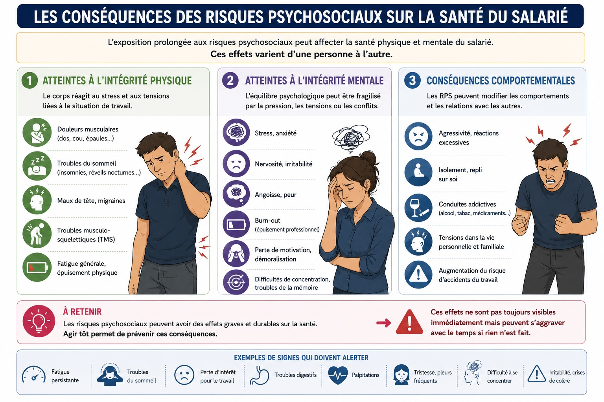
L'exposition prolongée aux RPS peut affecter le salarié de trois façons :
Atteintes à l'intégrité physique : douleurs musculaires, troubles du sommeil, maux de tête, troubles musculo-squelettiques, fatigue, épuisement physique.
Atteintes à l'intégrité mentale : stress, anxiété, irritabilité, burn-out, perte de motivation, difficultés de concentration, troubles de la mémoire.
Conséquences comportementales : agressivité, isolement, repli sur soi, conduites addictives (alcool, tabac, médicaments), tensions dans la vie personnelle.
| Intégrité physique | |
| Intégrité mentale | |
| Comportementale |
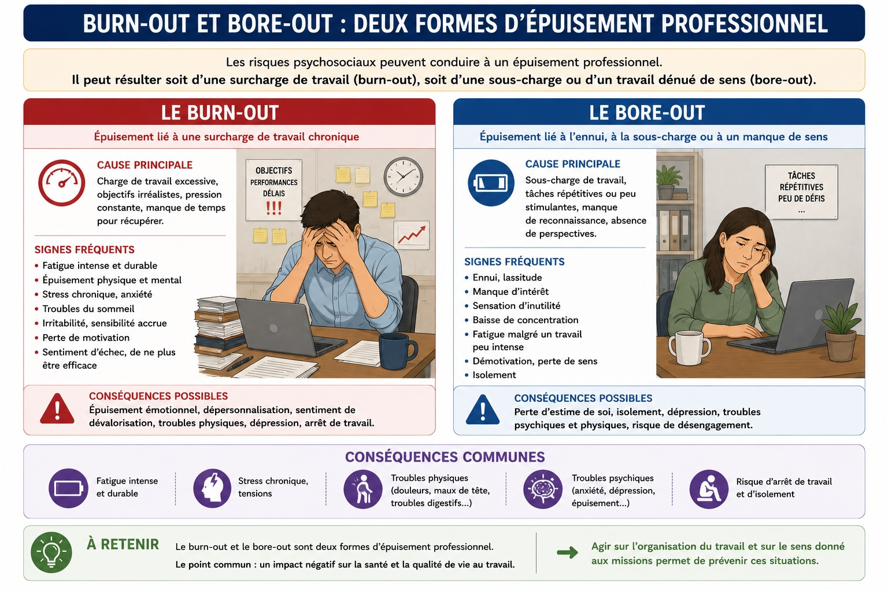
L'épuisement professionnel peut prendre deux formes opposées :
Le burn-out est un épuisement lié à une surcharge de travail chronique : charge excessive, objectifs irréalistes, pression constante, manque de temps pour récupérer. Il se traduit par une fatigue intense, du stress, un sentiment d'échec.
Le bore-out est un épuisement lié à une sous-charge de travail, à l'ennui ou à un manque de sens : tâches répétitives, peu stimulantes, manque de reconnaissance. Il se traduit par de la lassitude, de la démotivation et un sentiment d'inutilité.
Les deux peuvent conduire à une dépression, des troubles physiques et un arrêt de travail.
| Burn-out — cause | |
| Burn-out — signes | |
| Bore-out — cause | |
| Bore-out — signes |
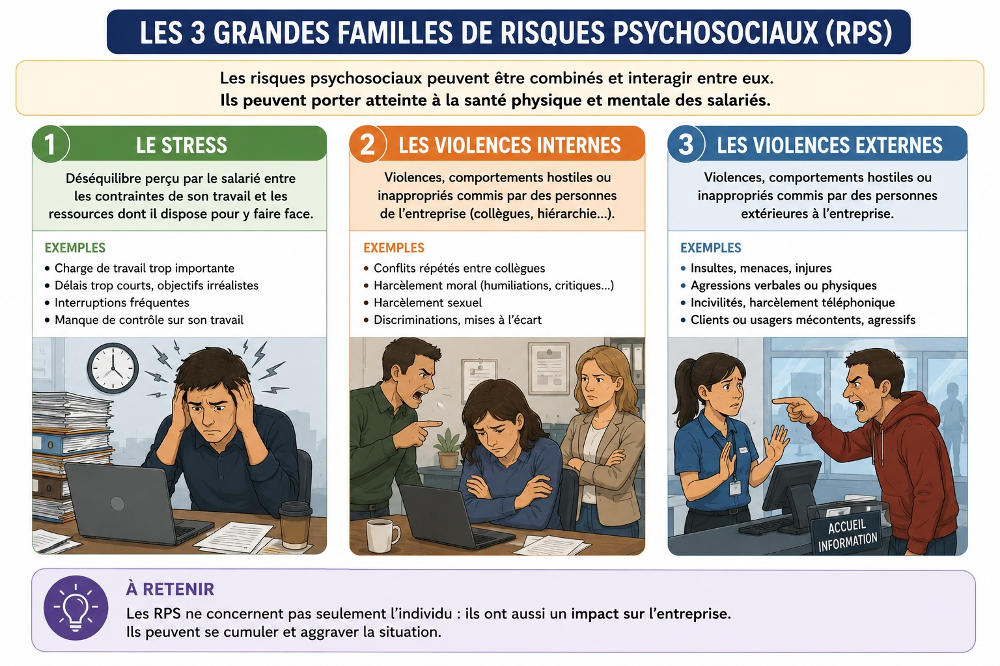
Les RPS peuvent être regroupés en trois grandes familles :
Le stress : déséquilibre perçu par le salarié entre les contraintes du travail (charge excessive, délais courts, objectifs irréalistes) et les ressources dont il dispose pour y faire face.
Les violences internes : comportements hostiles commis par des personnes appartenant à l'entreprise : conflits entre collègues, harcèlement moral, humiliations, harcèlement sexuel, discriminations.
Les violences externes : comportements hostiles commis par des personnes extérieures à l'entreprise : insultes, menaces, agressions verbales ou physiques de clients ou usagers mécontents.
| Violences internes | |
| Violences externes |
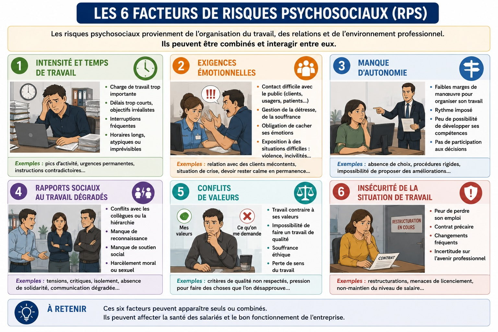
L'analyse des RPS repose sur six facteurs à repérer dans une situation de travail :
1. Intensité et temps de travail : charge trop importante, délais courts, objectifs irréalistes, interruptions, horaires longs ou atypiques.
2. Exigences émotionnelles : contact difficile avec le public, gestion de la souffrance, obligation de cacher ses émotions.
3. Manque d'autonomie : faibles marges de manœuvre, rythme imposé, peu de participation aux décisions.
4. Rapports sociaux dégradés : conflits avec collègues ou hiérarchie, manque de reconnaissance, manque de soutien, harcèlement.
5. Conflits de valeurs : travail contraire à ses valeurs, impossibilité de faire un travail de qualité, perte de sens.
6. Insécurité de la situation de travail : peur de perdre son emploi, contrat précaire, changements fréquents.
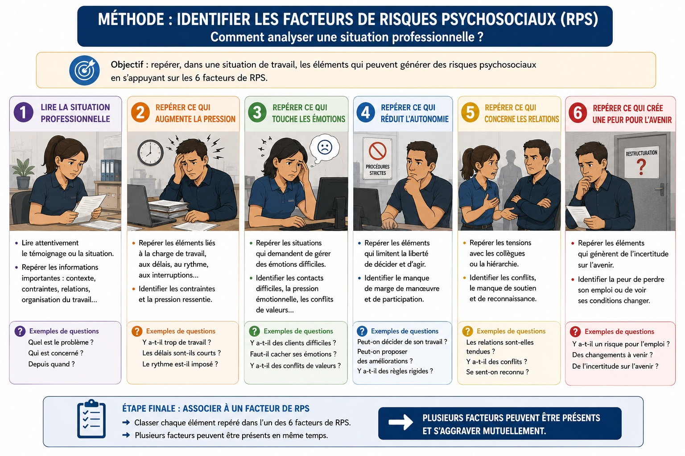
Une démarche en six étapes permet d'analyser méthodiquement une situation professionnelle :
1. Lire la situation (qui, quoi, depuis quand).
2. Repérer ce qui augmente la pression (charge, délais, rythme).
3. Repérer ce qui touche les émotions (clients difficiles, obligation de masquer ses ressentis).
4. Repérer ce qui réduit l'autonomie (règles rigides, peu de marges).
5. Repérer ce qui concerne les relations (tensions, conflits, manque de reconnaissance).
6. Repérer ce qui crée une peur pour l'avenir (restructuration, incertitude).
Chaque élément repéré est ensuite rattaché à un des six facteurs de RPS.
| Facteur 1 | |
| Facteur 2 | |
| Facteur 3 |
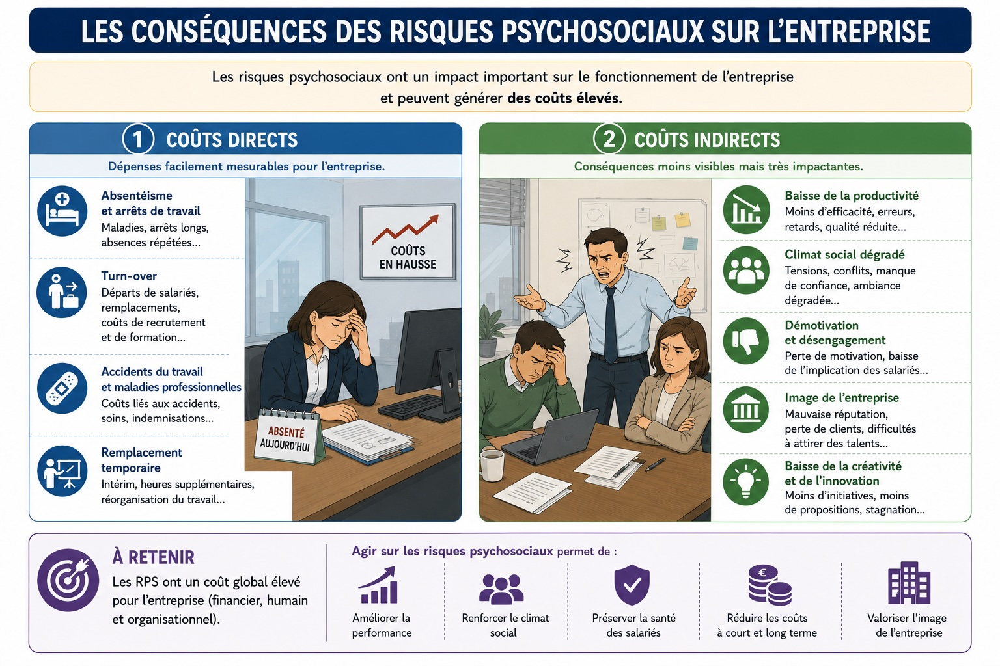
Les RPS ne touchent pas que les salariés : ils ont un impact important sur l'entreprise et génèrent des coûts élevés.
Coûts directs (mesurables) : absentéisme, arrêts de travail, turn-over, départs de salariés, coûts de recrutement et de formation, accidents du travail, maladies professionnelles, intérim, heures supplémentaires.
Coûts indirects (moins visibles mais très importants) : baisse de la productivité, erreurs, retards, qualité réduite, climat social dégradé, démotivation, mauvaise image de l'entreprise, perte de clients, baisse de la créativité.
Coûts directs (mesurables) :
Coûts indirects (moins visibles) :
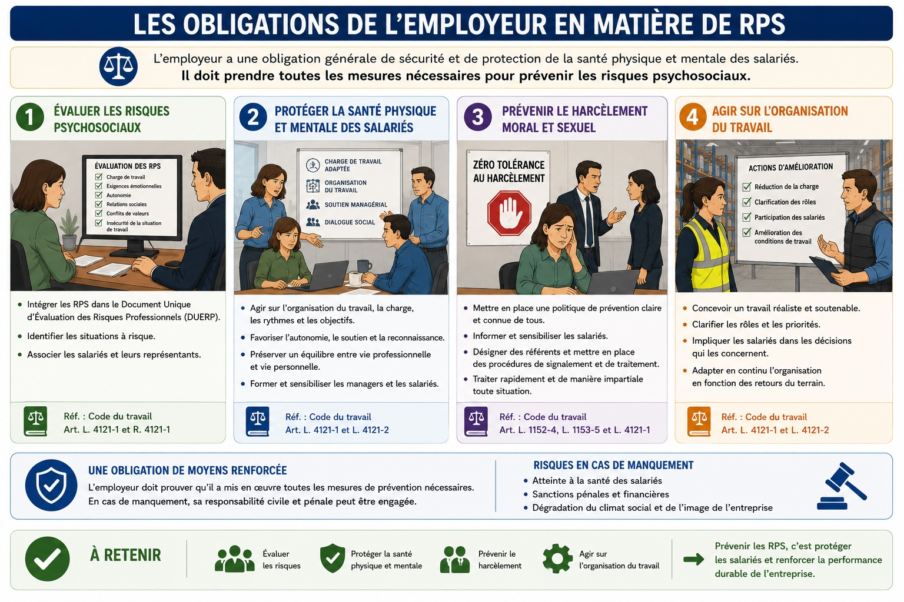
L'employeur a une obligation générale de sécurité et de protection de la santé physique et mentale des salariés. Il doit prendre toutes les mesures nécessaires pour prévenir les RPS. Cette obligation se décline en quatre grands axes :
1. Évaluer les risques : intégrer les RPS dans le Document Unique d'Évaluation des Risques Professionnels (DUERP), identifier les situations à risque, associer les salariés et leurs représentants.
2. Protéger la santé physique et mentale : agir sur l'organisation, la charge, les rythmes, favoriser l'autonomie, la reconnaissance, former les managers.
3. Prévenir le harcèlement moral et sexuel : politique claire, sensibilisation, référents, procédures de signalement.
4. Agir sur l'organisation du travail : travail soutenable, clarification des rôles, implication des salariés.
En cas de manquement, la responsabilité civile et pénale de l'employeur peut être engagée (Code du travail, articles L. 4121-1 et L. 4121-2).
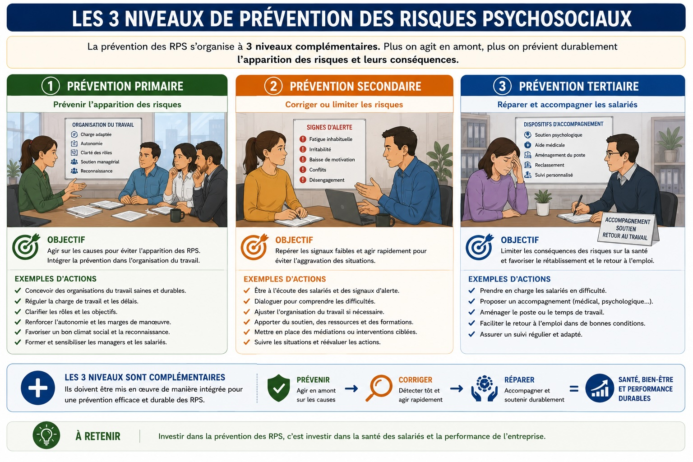
La prévention des RPS s'organise à trois niveaux, complémentaires :
Prévention primaire — prévenir : agir sur les causes pour éviter l'apparition des RPS. Concevoir des organisations saines, réguler la charge, clarifier les rôles, renforcer l'autonomie et la reconnaissance.
Prévention secondaire — corriger : repérer les signaux d'alerte et agir rapidement. Écouter, dialoguer, ajuster l'organisation, mettre en place des médiations.
Prévention tertiaire — réparer : accompagner les salariés en difficulté. Prise en charge médicale ou psychologique, aménagement du poste, soutien au retour à l'emploi.
Plus on agit en amont (prévention primaire), plus la prévention est durable et efficace.
| Primaire | |
| Secondaire | |
| Tertiaire |
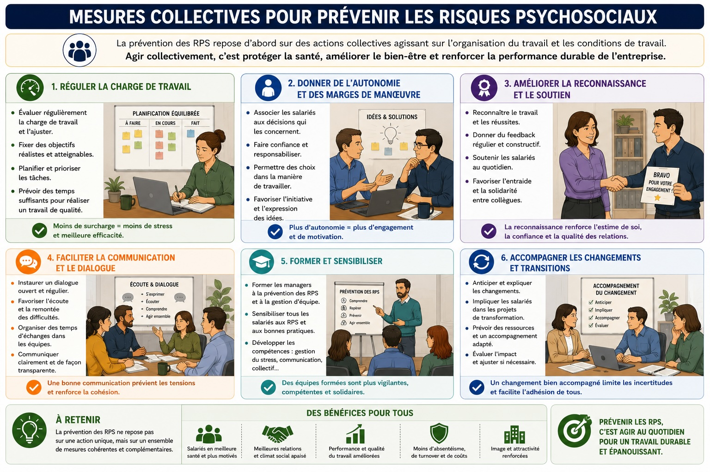
La prévention des RPS repose d'abord sur des mesures collectives agissant sur l'organisation et les conditions de travail :
1. Réguler la charge de travail : évaluer régulièrement, fixer des objectifs réalistes, planifier, prioriser.
2. Donner de l'autonomie : associer les salariés aux décisions, faire confiance, permettre des choix.
3. Améliorer la reconnaissance et le soutien : feedback régulier, soutien quotidien, entraide.
4. Faciliter la communication et le dialogue : écoute, remontée des difficultés, temps d'échange.
5. Former et sensibiliser : former les managers, sensibiliser tous les salariés.
6. Accompagner les changements : anticiper, expliquer, impliquer, ajuster.
À conserver et à relire avant l'évaluation
Continuer à s'entraîner sur mapse.fr :